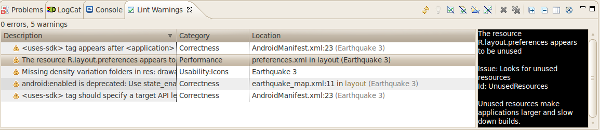

In addition to testing that your Android application meets its functional requirements, it's important to ensure that your code has no structural problems. Poorly structured code can impact the reliability and efficiency of your Android apps and make your code harder to maintain. For example, if your XML resource files contain unused namespaces, this takes up space and incurs unnecessary processing. Other structural issues, such as use of deprecated elements or API calls that are not supported by the target API versions, might lead to code failing to run correctly.
Overview
The Android SDK provides a code scanning tool called lint that can help you to easily identify and correct problems with the structural quality of your code, without having to execute the app or write any test cases. Each problem detected by the tool is reported with a description message and a severity level, so that you can quickly prioritize the critical improvements that need to be made. You can also configure a problem's severity level to ignore issues that are not relevant for your project, or raise the severity level. The tool has a command-line interface, so you can easily integrate it into your automated testing process.
The lint tool checks your Android project source files for potential bugs and optimization improvements for correctness, security, performance, usability, accessibility, and internationalization. You can run lint from the command-line or from the Eclipse environment.
Figure 1 shows how the lint tool processes the application source files.
Figure 1. Code scanning workflow with the lint tool
- Application source files
- The source files consist of files that make up your Android project, including Java and XML files, icons, and ProGuard configuration files.
- The
lint.xmlfile - A configuration file that you can use to specify any
lintchecks that you want to exclude and to customize problem severity levels. - The
linttool - A static code scanning tool that you can run on your Android project from the command-line or from Eclipse. The
linttool checks for structural code problems that could affect the quality and performance of your Android application. It is strongly recommended that you correct any errors thatlintdetects before publishing your application. - Results of
lintchecking - You can view the results from
lintin the console or in the Lint Warnings view in Eclipse. Each issue is identified by the location in the source files where it occurred and a description of the issue.
The lint tool is automatically installed as part of the Android SDK Tools revision 16 or higher. If you want to use lint in the Eclipse environment, you must also install the Android Development Tools (ADT) Plugin for Eclipse revision 16 or higher. For more information about installing the SDK or the ADT Plugin for Eclipse, see Installing the SDK.
Running lint from Eclipse
If the ADT Plugin is installed in your Eclipse environment, the lint tool runs automatically when you perform one of these actions:
- Export an APK
- Edit and save an XML source file in your Android project (such as a manifest or layout file)
- Use the layout editor in Eclipse to make changes
Note that when you export an APK, lint only runs an automatic check for fatal errors and aborts the export if fatal errors are found. You can turn off this automatic checking from the Lint Error Checking page in Eclipse Preferences.
The output is displayed in the Lint Warnings view. If the Lint Warnings view is not showing in the workbench, you can bring it up from the Eclipse menu by clicking Window > Show View > Other > Android > Lint Warnings.
Figure 2 shows an example of the output in the Lint Warnings view.
Figure 2. Sample output in the Lint Warnings view
You can also run a lint scan manually on your Android project in Eclipse by right-clicking on the project folder in the Package Explorer > Android Tools > Run Lint: Check for Common Errors.
Running lint from the Command-Line
To run lint against a list of files in a project directory:
lint [flags] <project directory>
For example, you can issue the following command to scan the files under the myproject directory and its subdirectories. The issue ID MissingPrefix tells lint to only scan for XML attributes that are missing the Android namespace prefix.
lint --check MissingPrefix myproject
To see the full list of flags and command-line arguments supported by the tool:
lint --help
Example lint output
The following example shows the console output when the lint command is run against a project called Earthquake.
$ lint Earthquake Scanning Earthquake: ............................................................................................................................... Scanning Earthquake (Phase 2): ....... AndroidManifest.xml:23: Warning: <uses-sdk> tag appears after <application> tag [ManifestOrder] <uses-sdk android:minSdkVersion="7" /> ^ AndroidManifest.xml:23: Warning: <uses-sdk> tag should specify a target API level (the highest verified version; when running on later versions, compatibility behaviors may be enabled) with android:targetSdkVersion="?" [UsesMinSdkAttributes] <uses-sdk android:minSdkVersion="7" /> ^ res/layout/preferences.xml: Warning: The resource R.layout.preferences appears to be unused [UnusedResources] res: Warning: Missing density variation folders in res: drawable-xhdpi [IconMissingDensityFolder] 0 errors, 4 warnings
The output above lists four warnings and no errors in this project. Three warnings (ManifestOrder, UsesMinSdkAttributes, and UsesMinSdkAttributes) were found in the project's AndroidManifest.xml file. The remaining warning (IconMissingDensityFolder) was found in the Preferences.xml layout file.
Configuring lint
By default, when you run a lint scan, the tool checks for all issues that are supported by lint. You can also restrict the issues for lint to check and assign the severity level for those issues. For example, you can disable lint checking for specific issues that are not relevant to your project and configure lint to report non-critical issues at a lower severity level.
You can configure lint checking at different levels:
- Globally, for all projects
- Per project
- Per file
- Per Java class or method (by using the
@SuppressLintannotation), or per XML element (by using thetools:ignoreattribute.
Configuring lint in Eclipse
You can configure global, project-specific, and file-specific settings for lint from the Eclipse user interface.
Global preferences
- Open Window > Preferences > Android > Lint Error Checking.
- Specify your preferences and click OK.
These settings are applied by default when you run lint on your Android projects in Eclipse.
Project and file-specific preferences
- Run the
linttool on your project by right-clicking on your project folder in the Package Explorer and selecting Android Tools > Run Lint: Check for Common Errors. This action brings up the Lint Warnings view which displays a list of issues thatlintdetected in your project. - From the Lint Warnings view, use the toolbar options to configure
lintpreferences for individual projects and files in Eclipse. The options you can select include:- Suppress this error with an annotation/attribute - If the issue appears in a Java class, the
linttool adds a@SuppressLintannotation to the method where the issue was detected. If the issue appears in an.xmlfile,lintinserts atools:ignoreattribute to disable checking for thelintissue in this file. - Ignore in this file - Disables checking for this
lintissue in this file. - Ignore in this project - Disables checking for this
lintissue in this project. - Always ignore - Disables checking for this
lintissue globally for all projects.
- Suppress this error with an annotation/attribute - If the issue appears in a Java class, the
If you select the second or third option, the lint tool automatically generates a lint.xml file with these configuration settings in your Android application project folder.
Configuring the lint file
You can specify your lint checking preferences in the lint.xml file. If you are creating this file manually, place it in the root directory of your Android project. If you are configuring lint preferences in Eclipse, the lint.xml file is automatically created and added to your Android project for you.
The lint.xml file consists of an enclosing <lint> parent tag that contains one or more children <issue> elements. Each <issue> is identified by a unique id attribute value, which is defined by lint.
<?xml version="1.0" encoding="UTF-8"?>
<lint>
<!-- list of issues to configure -->
</lint>
By setting the severity attribute value in the <issue> tag, you can disable lint checking for an issue or change the severity level for an issue.
Tip: To see the full list of issues supported by the lint tool and their corresponding issue IDs, run the lint --list command.
Sample lint.xml file
The following example shows the contents of a lint.xml file.
<?xml version="1.0" encoding="UTF-8"?>
<lint>
<!-- Disable the given check in this project -->
<issue id="IconMissingDensityFolder" severity="ignore" />
<!-- Ignore the ObsoleteLayoutParam issue in the specified files -->
<issue id="ObsoleteLayoutParam">
<ignore path="res/layout/activation.xml" />
<ignore path="res/layout-xlarge/activation.xml" />
</issue>
<!-- Ignore the UselessLeaf issue in the specified file -->
<issue id="UselessLeaf">
<ignore path="res/layout/main.xml" />
</issue>
<!-- Change the severity of hardcoded strings to "error" -->
<issue id="HardcodedText" severity="error" />
</lint>
Configuring lint checking in Java and XML source files
You can disable lint checking from your Java and XML source files.
Tip: If you are using Eclipse, you can use the Quick Fix feature to automatically add the annotation or attribute to disable lint checking to your Java or XML source files:
- Open the Java or XML file that has a
lintwarning or error in an Eclipse editor. - Move your cursor to the location in the file where is
lintissue is found, then pressCtrl+1to bring up the Quick Fix pop-up. - From the Quick Fix pop-up, select the action to add an annotation or attribute to ignore the
lintissue.
Configuring lint checking in Java
To disable lint checking specifically for a Java class or method in your Android project, add the @SuppressLint annotation to that Java code.
The following example shows how you can turn off lint checking for the NewApi issue in the onCreate method. The lint tool continues to check for the NewApi issue in other methods of this class.
@SuppressLint("NewApi")
@Override
public void onCreate(Bundle savedInstanceState) {
super.onCreate(savedInstanceState);
setContentView(R.layout.main);
The following example shows how to turn off lint checking for the ParserError issue in the FeedProvider class:
@SuppressLint("ParserError")
public class FeedProvider extends ContentProvider {
To suppress checking for all lint issues in the Java file, use the all keyword, like this:
@SuppressLint("all")
Configuring lint checking in XML
You can use the tools:ignore attribute to disable lint checking for specific sections of your XML files. In order for this attribute to be recognized by the lint tool, the following namespace value must be included in your XML file:
namespace xmlns:tools="http://schemas.android.com/tools"
The following example shows how you can turn off lint checking for the UnusedResources issue for the <LinearLayout> element of an XML layout file. The ignore attribute is inherited by the children elements of the parent element in which the attribute is declared. In this example, the lint check is also disabled for the child <TextView> element.
<LinearLayout
xmlns:android="http://schemas.android.com/apk/res/android"
xmlns:tools="http://schemas.android.com/tools"
tools:ignore="UnusedResources" >
<TextView
android:text="@string/auto_update_prompt" />
</LinearLayout>
To disable more than one issue, list the issues to disable in a comma-separated string. For example:
tools:ignore="NewApi,StringFormatInvalid"
To suppress checking for all lint issues in the XML element, use the all keyword, like this:
tools:ignore="all"